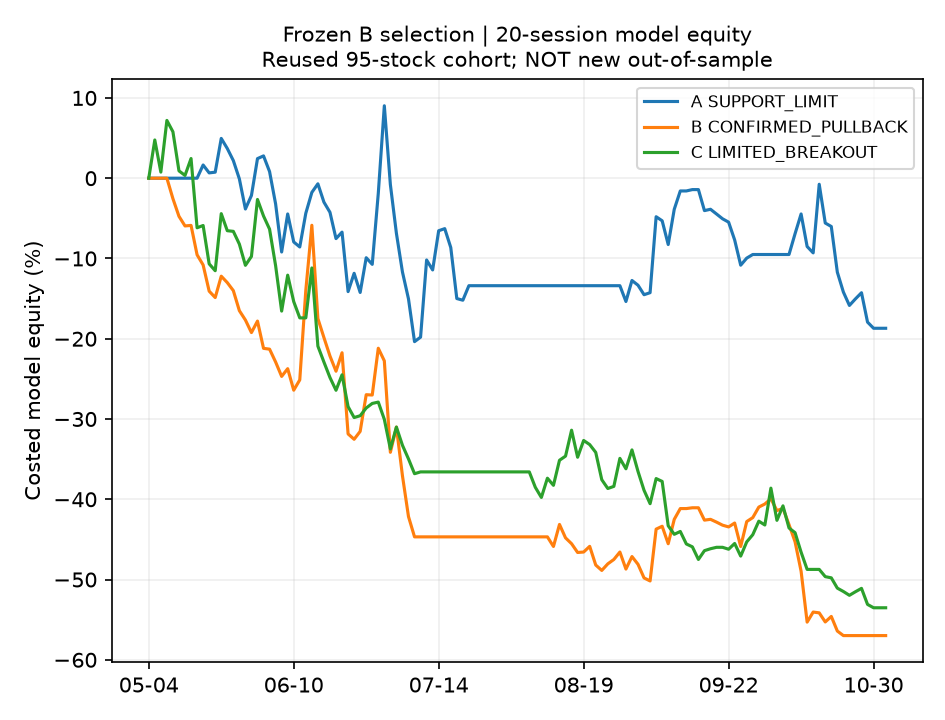
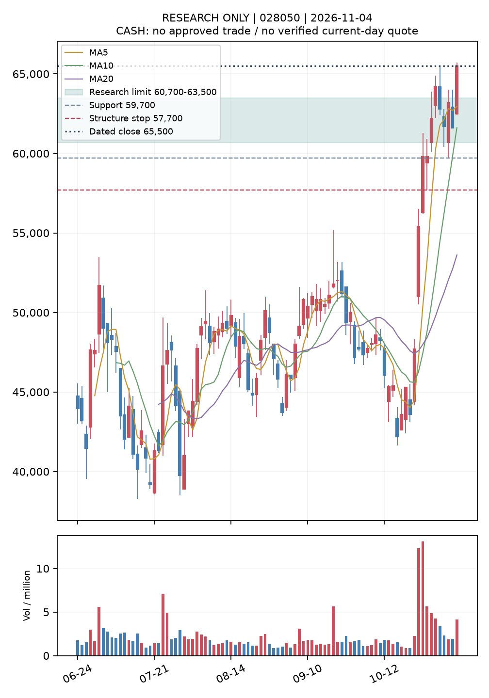
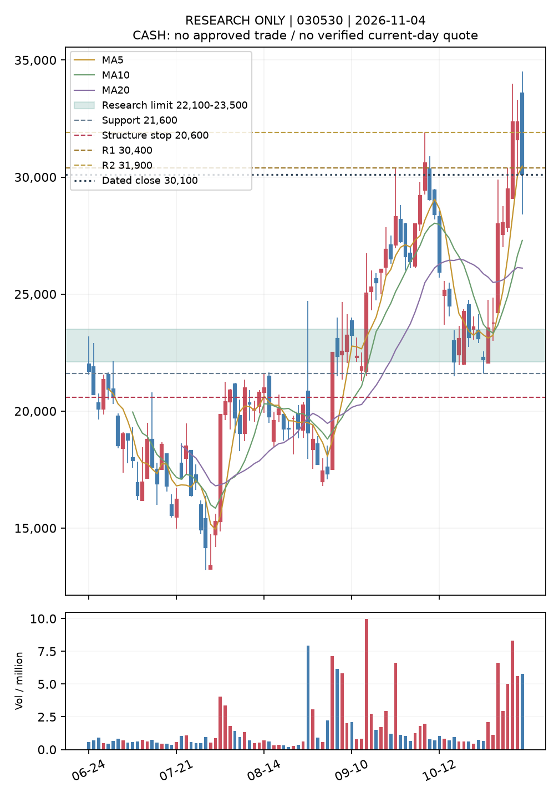

새 모델을 채택하지 않았습니다. 체결률 상승이 손익 개선으로 이어지지 않았습니다. 새 미사용 기간의 완료 표본은 0입니다.
현재 전체 분석 가능 1983종목, A 후보 141개, B 후보 119개. 후보 가격 기준 2026-11-04이며, 최신 공식 종가를 확보하지 못해 이전에 검증한 날짜를 표시했습니다. 이는 과거 95종목의 성과와 별개입니다.
2026-05-01~11-03 재사용 기간, 같은 결정일·후보·비용·구조손절·2개 자금 슬롯. 체결률 분모는 제출된 모형 주문이며 신호 없는 150개 전체 결정을 분모로 삼지 않습니다. 손익은 완료 거래 평균입니다.
| 방식 | 5일 순손익 | 10일 | 20일 | 20일 진입/주문 | 완료 | 손절률 | 수익기회 미체결/신호없음 | 종가 최대낙폭 |
|---|---|---|---|---|---|---|---|---|
| 지지 지정가 | -2.08% | -0.19% | -3.88% | 8/88 (9.1%) | 6 | 50.0% | 21 / 0 | -26.96% |
| 눌림 확인 다음 시가 | -3.67% | -7.71% | -19.58% | 7/9 (77.8%) | 6 | 33.3% | 0 / 27 | -56.98% |
| 돌파 확인 제한 매수 | -6.83% | -11.01% | -17.58% | 8/9 (88.9%) | 7 | 28.6% | 1 / 25 | -56.64% |
미체결·신호 없음의 수익 기회는 다음 시가 기준 비용 차감 수익이 양수인 경우이며, 실제 주문 또는 독립 거래 수가 아닙니다. 같은 종목의 연속 결정과 자금 제약을 분리한 진단값입니다. 장중 최대낙폭·실제 주문 체결은 인증하지 않았습니다.

B의 하락장 20일 시장 대비 +6.71%p에도 비용 차감 기준가격 손익은 -6.35%였습니다. 같은 결정일·같은 시장끼리 맞춘 비교에서 B-A는 상승장 -0.71%p(4개), 횡보장 -1.08%p(6개), 하락장은 대응 표본이 없습니다. 서로 다른 종목·날짜의 평균 손실 축소를 같은 날 선정 개선으로 해석하지 않습니다.
구조저점과 확인 시점의 ATR은 유지했습니다. 시가 진입 시 그 저점과 너무 멀어지는 사례가 확인됐습니다. 손절 범위를 사후 최적화하지 않았으며, 종가 이탈 뒤 다음 거래 시가와 갭·비용을 반영했습니다. 자세한 사례는 stop_diagnostics.json에 저장했습니다.
해시로 고정한 입력과 상승 근거·위험 반론을 함께 요구하는 출력 검증을 구현했습니다. 실제 모델 응답 0회, 유료 API 0회로 성과는 미검증입니다. 11월 6일 이후 신규 결정과 5·10·20일 결과는 아직 없습니다.
연구 순위 1 · 2026-11-04 종가 65,500원. 정규장 원천 인증과 기업행위 전수 검증은 미완료입니다.
자기 시장 대비 20일 상대강도 +54.43%p, 5일간 상대강도 개선 +13.30%p. 업종 건설은 표시만 했으며 순위에 새 조건을 추가하지 않았습니다.
과거 기준 연구 지정가 60,700원~63,500원, 구조손절 57,700원, 지지 59,700원, 첫 저항 미확인, 둘째 저항 미확인. 상단 매수 대비 손절 거리 9.13%.
다음 시가 눌림·돌파 확인 신호는 미성립입니다. 매수 승인 없음. 현재 실행 가격이나 5·10·20일 상승 예측으로 사용하지 않습니다.

연구 순위 2 · 2026-11-04 종가 30,100원. 정규장 원천 인증과 기업행위 전수 검증은 미완료입니다.
자기 시장 대비 20일 상대강도 +20.65%p, 5일간 상대강도 개선 +9.00%p. 업종 반도체와반도체장비은 표시만 했으며 순위에 새 조건을 추가하지 않았습니다.
과거 기준 연구 지정가 22,100원~23,500원, 구조손절 20,600원, 지지 21,600원, 첫 저항 30,400원, 둘째 저항 31,900원. 상단 매수 대비 손절 거리 12.34%.
다음 시가 눌림·돌파 확인 신호는 미성립입니다. 매수 승인 없음. 현재 실행 가격이나 5·10·20일 상승 예측으로 사용하지 않습니다.

연구 브랜치 전용. 실전 주문·기존 알림·예약·기본 브랜치 변경 없음.